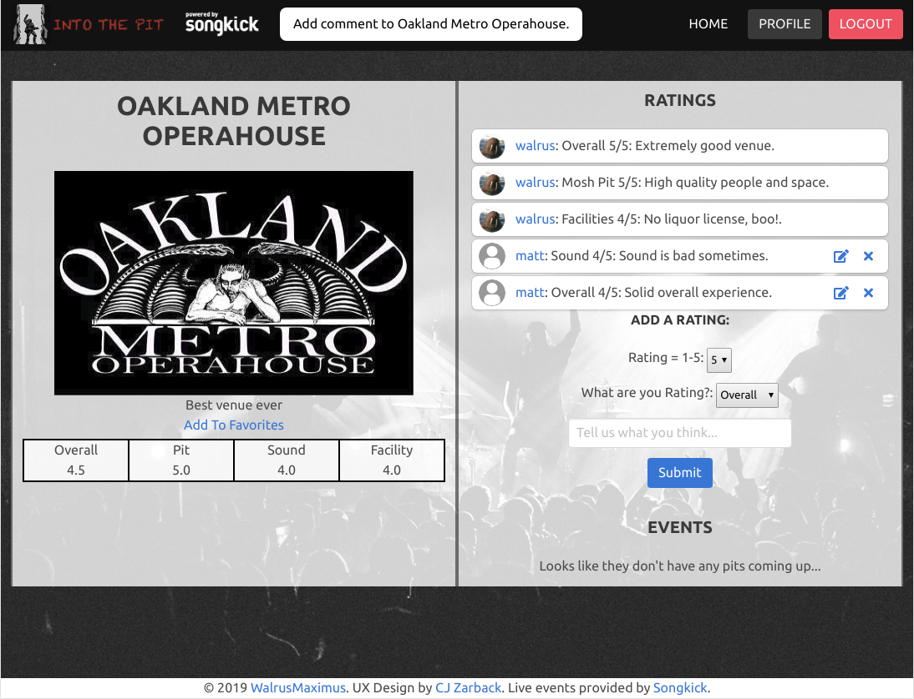

My name is Matthew Freeland, but, my friends call me "The Walrus". I am a fullstack web developer with a focus on Python frameworks, Node.js, React, and Database Architecture as well as frontend Javascript, HTML, and CSS experience. I graduated from the General Assembly Web Development Immersive on April 16th, 2019.
I have been working in the event space world for a while, adjacent to technologists and web developers making conferences and tradeshows tolerable. Little did I know I was slowly turning into a web developer myself as my responsibilities evolved over time to automate processes more than managing accounts!
I started of my "Tech" career almost a decade ago in the form of process automation and workflow improvement in the form of overly complicated excel spreadsheets. I inherited lots of broken and unusable tools and unfriendly ERPs in my positions and took it upon myself to improve them for the rest of the team. This gradually morphed into less of a side project and more of a marketed skill that teams really valued from me. The limitations imposed by a spreadsheet with no version control being utilized by teams of sometimes hundreds directed me towards the concept of web development to access these functions with simultaneous users across multiple devices, and so, my web development journey began.
Github Repo / www.IntoThePit.net
Into The Pit is a Flask based website using a SQLite Database (PostgreSQL for deployed version)
The site provides a platform for reviewing venues that regularly host metal and punk shows with mosh pits and allows users to rank 4 different categories for the venue to determine if the venue is a good concert environment.
The user will also see events coming up at the venue (Delivered from SongKick's API) and be able to view the bands themselves for when concerts are coming up in the SF Bay Area. They can also favorite the bands or venues and see an aggregated list of both on their user dashboard at their profile.
In Planning Stages
Currently in progress. App is based on MERN Technology Stack. Functionality will include: User profiles for Elder Consumers or Caregivers, search and scheduling options to allow caregivers to create available times and consumers to request access to those times. Alternatively, consumers can post requests for providers to connect them with available caregivers nearby.
Travel review and information app. Users a pre-constructed object of available cities and allows users to leave comments and see what people think.
Please note:
(Live site is hosted to Heroku, you may need to refresh your page if the application does not load)